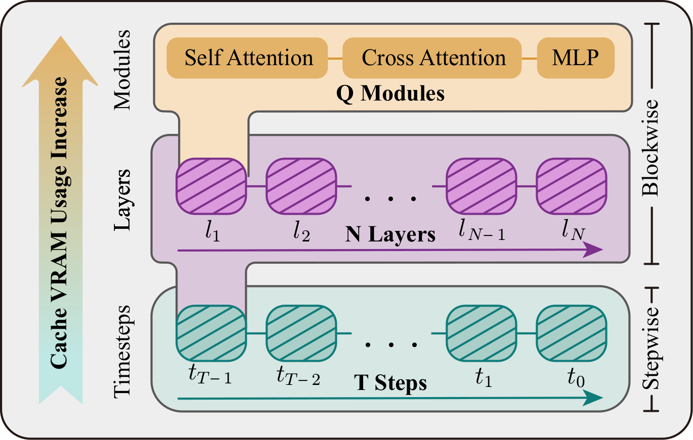
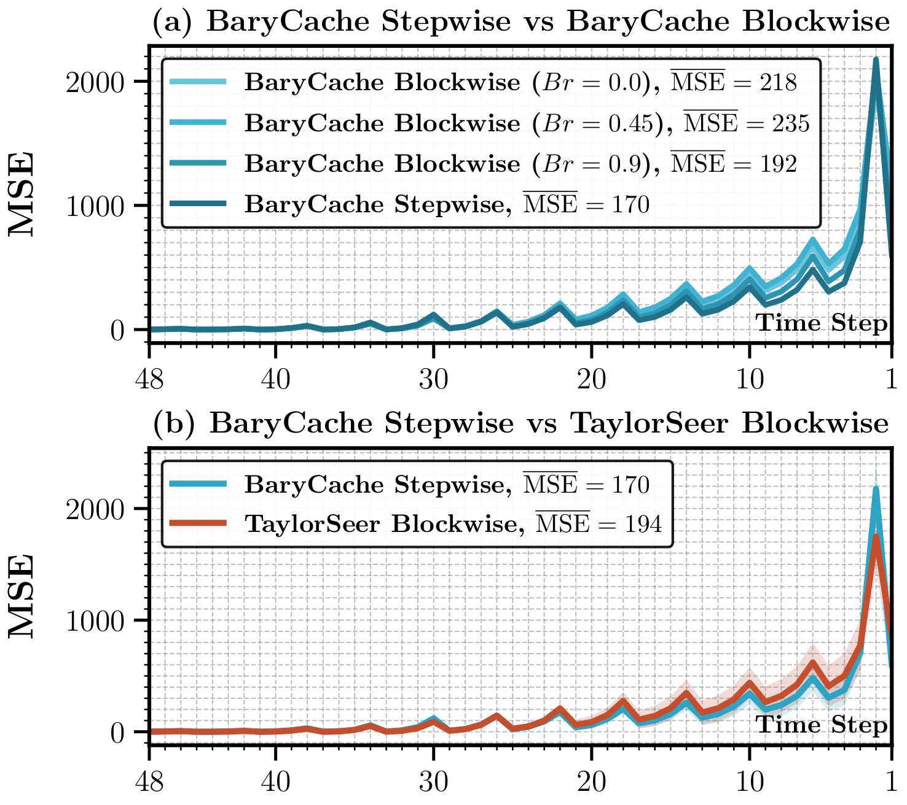

Short sliding history
For history length \(H\), retain the most recent full-step anchors:
\[\mathcal{H}_t=\{\mathbf{x}'_{s_1},\ldots,\mathbf{x}'_{s_H}\},\qquad s_j<t.\]
The main setting uses \(H=2\), minimizing retained activation memory.
Diffusion Transformers achieve high-fidelity image and video generation, but their iterative sampling remains expensive because every denoising step requires large matrix operations. Existing cache-based acceleration reduces redundant computation yet increases the VRAM footprint by storing intermediate states, directly constraining inference batch size. We propose a training-free acceleration method that performs stepwise forecasting for DiT sampling using a Barycentric Extrapolator. Its numerically stable formulation alleviates oscillatory artifacts analogous to the Runge phenomenon. Across class-to-image, text-to-image, and text-to-video generation, BaryCache delivers a favorable quality-memory trade-off and up to 3.30x end-to-end speedup.

Let a DiT contain \(L\) layers and \(Q\) modules per layer. While blockwise caching may retain as many as \(\mathcal{N}\!\times\!Q\) intermediate tensors over \(\mathcal{N}\) cached steps, BaryCache stores only the final stepwise feature \(\mathbf{x}'_t\), making its cache memory independent of network depth. An equal-spaced scheduler alternates full forwards that refresh the cache with lightweight cache forwards that substitute a stable barycentric forecast, without finetuning the pretrained model or introducing an auxiliary network.
For history length \(H\), retain the most recent full-step anchors:
The main setting uses \(H=2\), minimizing retained activation memory.
Build a key only from timestep distances and the history decay:
The same schedule reuses precomputed weights across samples.
With endpoint coefficients \(c_1=c_H=\tfrac{1}{2}\) and interior coefficients \(c_j=1\), compute and clip the barycentric terms before applying history decay:
Blend the barycentric forecast with the newest anchor:
Periodic full steps refresh \(\mathcal{H}_t\) and bound accumulated error.

Text-to-image · PixArt-Sigma
3.30×at \(\mathcal{N}=6,\ H=2\)
VRAM 3.941 GB
ImageReward 0.6654
CLIPScore 31.10
Text-to-video · HunyuanVideo
3.02×at \(\mathcal{N}=7,\ H=2\)
VRAM 30.805 GB
SSIM 0.6496
LPIPS 0.3463
Class-to-image · DiT-XL/2
2.18×at \(\mathcal{N}=6,\ H=2\)
VRAM 5.529 GB
FID 3.91
sFID 5.27
Complete main-table results reported in the paper. Scroll horizontally on smaller screens.
Quantitative comparison in text-to-image generation. \(\lambda=0.0\).
| Method | FLOPs (T) ↓ | Latency (s) ↓ | Speedup ↑ | VRAM (GB) ↓ | ImageReward ↑ | CLIPScore ↑ |
|---|---|---|---|---|---|---|
| Vanilla: DDIM-50 | 450.52 | 4.974 | 1.00× | 3.363 | 0.7258 | 30.89 |
| Vanilla: DDIM-15 | 135.16 | 1.484 | 3.35× | 3.363 | 0.6577 | 31.04 |
| Δ-DiT \((\mathcal{N}=4)\) | 126.15 | 1.651 | 3.01× | 3.651 | 0.6246 | 30.96 |
| FORA \((\mathcal{N}=4)\)† | 125.68 | 3.939 | 1.26× | 19.255 | 0.5024 | 30.79 |
| ToCa \((\mathcal{N}=4)\)† | 189.08 | 4.957 | 1.00× | 27.453 | 0.5679 | 30.83 |
| DuCa \((\mathcal{N}=4)\)† | 167.94 | 4.593 | 1.08× | 27.453 | 0.5842 | 30.87 |
| TeaCache (l=0.65) | 126.15 | 1.666 | 2.98× | 3.795 | 0.6478 | 31.01 |
| TaylorSeer \((\mathcal{N}=4)\)† | 125.88 | 2.874 | 1.73× | 21.913 | 0.7097 | 30.98 |
| BaryCache \((\mathcal{N}=4,\ H=2)\) | 126.15 | 1.863 | 2.67× | 3.941 | 0.7220 | 30.92 |
| Vanilla: DDIM-11 | 99.11 | 1.088 | 4.57× | 3.363 | 0.5844 | 31.05 |
| Δ-DiT \((\mathcal{N}=6)\) | 90.10 | 1.284 | 3.87× | 3.651 | 0.5001 | 31.04 |
| FORA \((\mathcal{N}=6)\)† | 89.77 | 3.153 | 1.58× | 19.255 | 0.2723 | 30.54 |
| ToCa \((\mathcal{N}=6)\)† | 160.21 | 4.240 | 1.17× | 27.453 | 0.3541 | 30.92 |
| DuCa \((\mathcal{N}=6)\)† | 132.04 | 3.522 | 1.41× | 27.453 | 0.3642 | 30.86 |
| TeaCache (l=0.95) | 99.11 | 1.394 | 3.57× | 3.795 | 0.6130 | 31.17 |
| TaylorSeer \((\mathcal{N}=6)\)† | 89.98 | 2.772 | 1.79× | 21.913 | 0.6537 | 30.92 |
| BaryCache \((\mathcal{N}=6,\ H=2)\) | 90.10 | 1.505 | 3.30× | 3.941 | 0.6654 | 31.10 |
Quantitative comparison in text-to-video generation.
| Method | Latency (s) ↓ | Speedup ↑ | VRAM (GB) ↓ | PSNR ↑ | SSIM ↑ | LPIPS ↓ |
|---|---|---|---|---|---|---|
| Vanilla: Euler-50 | 231.240 | 1.000× | 31.171 | – | – | – |
| ToCa \((\mathcal{N}=5)\)† | 87.580 | 2.640× | 46.521 | 15.8272 | 0.5069 | 0.4437 |
| DuCa \((\mathcal{N}=5)\)† | 82.480 | 2.804× | 46.515 | 15.8641 | 0.5122 | 0.4440 |
| TeaCache (l=0.4) | 84.920 | 2.723× | 31.525 | 17.0962 | 0.5984 | 0.3775 |
| TaylorSeer \((\mathcal{N}=5)\)† | 87.940 | 2.630× | 60.771 | 15.9317 | 0.5214 | 0.4269 |
| BaryCache \((\mathcal{N}=5,\ H=2)\) | 84.650 | 2.732× | 30.805 | 19.0159 | 0.6829 | 0.2992 |
| ToCa \((\mathcal{N}=7)\)† | 81.290 | 2.845× | 46.521 | 15.3712 | 0.5045 | 0.4962 |
| DuCa \((\mathcal{N}=7)\)† | 75.570 | 3.060× | 46.515 | 15.3682 | 0.5058 | 0.4980 |
| TeaCache (l=0.5) | 77.060 | 3.001× | 31.525 | 17.3969 | 0.5921 | 0.3806 |
| TaylorSeer \((\mathcal{N}=7)\)† | 75.190 | 3.075× | 60.771 | 15.4674 | 0.5104 | 0.4716 |
| BaryCache \((\mathcal{N}=7,\ H=2)\) | 76.640 | 3.017× | 30.805 | 17.9988 | 0.6496 | 0.3463 |
Quantitative comparison in class-to-image generation.
| Method | FLOPs (T) ↓ | Latency (s) ↓ | Speedup ↑ | VRAM (GB) ↓ | FID ↓ | sFID ↓ | IS ↑ |
|---|---|---|---|---|---|---|---|
| Vanilla: DDIM-50 | 23.74 | 0.349 | 1.00× | 6.037 | 2.27 | 4.34 | 239.61 |
| Vanilla: DDIM-25 | 11.87 | 0.234 | 1.49× | 6.037 | 2.91 | 4.54 | 229.97 |
| Δ-DiT \((\mathcal{N}=3)\) | 8.07 | 0.182 | 1.91× | 6.037 | 3.58 | 4.66 | 217.19 |
| FORA \((\mathcal{N}=5)\)† | 5.24 | 0.190 | 1.84× | 6.467 | 5.81 | 9.74 | 200.64 |
| ToCa \((\mathcal{N}=5)\)† | 7.72 | 0.303 | 1.15× | 6.569 | 4.41 | 6.21 | 213.46 |
| DuCa \((\mathcal{N}=5)\)† | 6.04 | 0.232 | 1.50× | 6.569 | 4.81 | 6.75 | 207.04 |
| TeaCache (l=0.2) | 8.55 | 0.197 | 1.77× | 6.057 | 3.38 | 4.73 | 218.06 |
| TaylorSeer \((\mathcal{N}=5)\)† | 5.24 | 0.215 | 1.62× | 8.483 | 2.73 | 5.44 | 233.35 |
| BaryCache \((\mathcal{N}=5,\ H=2)\) | 5.24 | 0.181 | 1.93× | 5.529 | 3.27 | 4.61 | 219.67 |
| Vanilla: DDIM-20 | 5.70 | 0.194 | 1.80× | 6.037 | 3.49 | 4.88 | 224.42 |
| Δ-DiT \((\mathcal{N}=4)\) | 7.75 | 0.151 | 2.31× | 6.037 | 5.02 | 5.33 | 201.71 |
| FORA \((\mathcal{N}=6)\)† | 4.77 | 0.164 | 2.12× | 6.467 | 9.20 | 14.97 | 171.28 |
| ToCa \((\mathcal{N}=6)\)† | 7.25 | 0.297 | 1.17× | 6.569 | 5.77 | 7.54 | 200.86 |
| DuCa \((\mathcal{N}=6)\)† | 5.85 | 0.202 | 1.73× | 6.569 | 5.90 | 7.58 | 198.84 |
| TeaCache (l=0.4) | 5.22 | 0.140 | 2.49× | 6.057 | 6.71 | 6.62 | 185.89 |
| TaylorSeer \((\mathcal{N}=6)\)† | 4.77 | 0.202 | 1.73× | 8.483 | 3.17 | 6.47 | 225.77 |
| BaryCache \((\mathcal{N}=6,\ H=2)\) | 4.77 | 0.160 | 2.18× | 5.529 | 3.91 | 5.27 | 209.77 |
† Blockwise caching improves quality but incurs additional VRAM overhead, which can limit batch size.
Swipe or use the carousel controls to browse all six prompts.
All videos autoplay silently and loop. Click a video to enlarge it in this page.
This work was supported by the Guangdong Provincial Natural Science Foundation - General Program (Grant No. 2025A1515011568); the Project of Shenzhen Science and Technology Innovation Bureau - General Project (Grant No. JCYJ20250604182252068); the Guangdong Provincial Department of Education Key Areas Special Project for University Scientific Research (Grant No. 2024ZDZX1015); and the Internal Fund of National Engineering Laboratory for Big Data System Computing Technology (Grant No. SZU-BDSC-IF2024-05).
@inproceedings{lu2026barycache,
title = {Memory-Efficient Training-Free Acceleration of Diffusion Transformers with BaryCache},
author = {Lu, Chengjie and Deng, Tianchi and He, Zhengqi and Gao, Zhijian and Wu, Huisi and Li, Xueliang},
year = {2026}
}